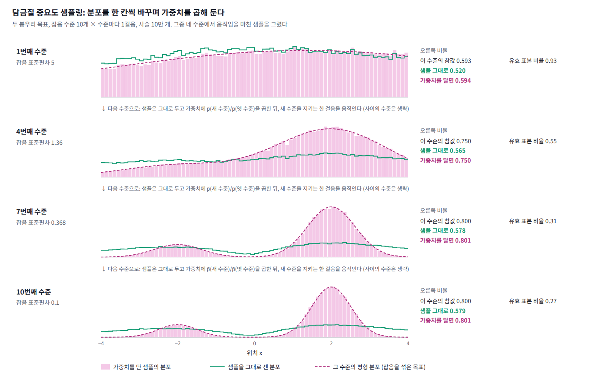

담금질 중요도 샘플링: 사다리를 따라 옮기며 가중치 달기
지금까지는 물리의 덫이었다. 첫머리의 두 봉우리처럼 에너지만 주어지고 분배함수는 모르는 ML의 분포에도 이 등식을 그대로 쓸 수 있을까?
역사: 닐의 기술 보고서
통계학자 래드퍼드 닐은 1998년 토론토 대학교의 기술 보고서에서 담금질 중요도 샘플링을 발표했다(학술지 출판은 2001년). 다루기 쉬운 분포에서 목표 분포로 중간 분포들을 거쳐 옮겨 가는 담금질은 원래 봉우리 사이에 갇히는 문제를 어림으로 다루는 방법이었는데, 닐은 중간 분포를 바꿀 때마다 가중치를 곱해 두면 그 결과가 정확한 중요도 샘플링이 된다는 것을 보였다. 논문에는 「독립적인 연구에서 야르진스키가 주로 자유에너지 추정을 겨냥해, 여기서 설명하는 담금질 중요도 샘플링과 본질적으로 같은 방법을 설명했다」는 문장이 있다. 물리학자와 통계학자가 거의 같은 때 같은 식에 이른 것이다.
중간 분포의 사다리
ML에서 이 등식을 쓰는 상황은 대개 이렇다. 목표 분포는 에너지 U₁(x)로만 주어져 정규화 전 밀도 p̃₁ = e^(−U₁)을 계산할 수 있을 뿐이고, 분배함수 Z₁은 모른다. 한편 정규분포처럼 샘플도 뽑을 수 있고 정규화된 밀도도 아는 쉬운 분포 p₀가 있다. 두 분포 사이에 중간 분포들을 놓고 kT = 1로 두면, 매개변수를 바꾸는 순간의 일은 정규화 전 로그밀도의 차이다. 가장 흔한 중간 분포는 두 에너지를 직선으로 섞은 U_λ = (1 − λ)U₀ + λU₁, 곧 p̃_λ = p₀^(1−λ) p̃₁^λ이고, 에너지 E에 역온도 β를 0에서 올려 가는 온도 사다리 e^(−βE)도 이 꼴이다. 잡음을 섞는 수준을 줄여 가는 담금질 랑주뱅의 사다리를 써도 된다.
보통의 중요도 샘플링은 쉬운 분포의 샘플에 밀도 비를 한 번에 곱하지만, 이 절차는 샘플을 중간 분포들을 따라 옮기며 밀도 비를 한 칸씩 나눠 곱한다. 닐은 이 절차를 담금질 중요도 샘플링 (쉬운 분포에서 목표 분포로 중간 분포들을 거쳐 샘플을 옮기며, 분포를 바꿀 때마다 밀도 비를 곱해 둔 가중치로 결과를 바로잡는 방법, annealed importance sampling, AIS)이라 불렀다.
두 봉우리를 다시 풀기
이 장 첫머리의 두 봉우리를 이 식으로 다시 풀어 보자. 출발은 표준편차 5인 정규분포이고, 잡음의 표준편차 5에서 0.1까지 기하 간격으로 놓은 수준들이 중간 분포다. 각 수준에서는 랑주뱅 방정식의 한 걸음을 제안으로 두고 메트로폴리스 수락 단계를 붙여서, 그 수준의 분포를 정확히 지키게 했다(제안의 99%가 수락된다). 사슬 10만 개의 결과는 다음과 같다.
| 수준 × 수준마다 걸음 | 오른쪽 비율 | 가중치를 단 비율 | ⟨e^(−𝒲)⟩ |
|---|---|---|---|
| 10 × 100 | 0.795 | 0.803 | 0.996 |
| 10 × 10 | 0.754 | 0.800 | 1.004 |
| 10 × 1 | 0.579 | 0.801 | 1.006 |
| 10 × 0 | 0.500 | 0.800 | 0.999 |
| 100 × 10 | 0.797 | 0.802 | 1.003 |
| 1000 × 1 | 0.795 | 0.800 | 1.002 |
가중치를 단 비율은 모든 줄에서 0.80이고, 가중치의 평균은 모든 줄에서 Z의 비 1과 맞는다. 잡음 수준들이 모두 정규화되어 있어 ΔF = 0이기 때문이다. 샘플을 그대로 센 비율은 걸음이 적을수록 뒤처지지만, 아래 그림처럼 가중치를 단 분포는 수준마다 그 수준의 평형 분포를 따라간다.

코드로 확인하기
담금질 랑주뱅의 사다리를 AIS의 중간 분포로 쓴다. 분포를 바꾸는 순간마다 로그밀도의 변화를 더해 두고, 끝에서 그 지수를 가중치로 단다. 수준 수와 수준마다 걸음 수를 바꿔 가며 가중치를 달기 전과 뒤의 오른쪽 비율, 가중치의 평균, 소산된 일, 유효 표본 비율을 비교한다.
import numpy as np
rng = np.random.default_rng(0)
# 목표: −2에 비중 0.2, +2에 비중 0.8, 표준편차 0.5. 잡음(표준편차 s)을 섞은 분포는
# 분산이 0.25 + s²인 두 정규분포의 혼합이고, 모두 정규화되어 있어 Z의 비가 1이다
wts, mus = np.array([0.2, 0.8]), np.array([-2.0, 2.0])
def log_p(x, v): # 정규화된 로그밀도 = −U (kT = 1)
l = np.log(wts)[:, None] - (x - mus[:, None])**2 / (2 * v) - 0.5 * np.log(2 * np.pi * v)
return np.logaddexp(l[0], l[1])
def score(x, v):
l = np.log(wts)[:, None] - (x - mus[:, None])**2 / (2 * v)
r = np.exp(l - l.max(0)); r /= r.sum(0)
return (r * (mus[:, None] - x)).sum(0) / v
def ais(levels, steps, n=100_000):
x = 5 * rng.standard_normal(n) # 출발: 표준편차 5인 정규분포 (샘플도 밀도도 안다)
logw = x**2 / 50 + 0.5 * np.log(2 * np.pi * 25) # −ln p_출발(x)
v_old = None
for s in np.geomspace(5, 0.1, levels): # 잡음 표준편차 5 → 0.1
v = 0.25 + s**2
logw += log_p(x, v) - (log_p(x, v_old) if v_old else 0) # 분포를 바꾸는 순간: −(일)
v_old = v
a = 0.2 * s**2 # 걸음은 잡음 수준에 맞춰 줄인다
for _ in range(steps): # 랑주뱅 제안 + 메트로폴리스 수락: 이 수준의 분포를 정확히 지킨다
y = x + a * score(x, v) + np.sqrt(2 * a) * rng.standard_normal(n)
log_acc = (log_p(y, v) - log_p(x, v)
- (x - y - a * score(y, v))**2 / (4 * a) + (y - x - a * score(x, v))**2 / (4 * a))
x = np.where(np.log(rng.uniform(size=n)) < log_acc, y, x)
return x, logw
for levels, steps in ((10, 100), (10, 10), (10, 1), (10, 0), (100, 10), (1000, 1)):
x, logw = ais(levels, steps)
w = np.exp(logw)
ess = w.sum()**2 / (w**2).sum() / len(w)
print(f"수준 {levels:4d} × {steps:3d}걸음: 오른쪽 비율 {np.mean(x > 0):.3f} → 가중치를 달면 {(w * (x > 0)).sum() / w.sum():.3f} | "
f"⟨e^(−W)⟩ = {w.mean():.3f}, ⟨W⟩ = {-logw.mean():6.3f}, 유효 표본 {ess:.2f}")
# 수준 10 × 100걸음: 오른쪽 비율 0.795 → 가중치를 달면 0.803 | ⟨e^(−W)⟩ = 0.996, ⟨W⟩ = 0.733, 유효 표본 0.46
# 수준 10 × 10걸음: 오른쪽 비율 0.754 → 가중치를 달면 0.800 | ⟨e^(−W)⟩ = 1.004, ⟨W⟩ = 0.826, 유효 표본 0.43
# 수준 10 × 1걸음: 오른쪽 비율 0.579 → 가중치를 달면 0.801 | ⟨e^(−W)⟩ = 1.006, ⟨W⟩ = 7.691, 유효 표본 0.27
# 수준 10 × 0걸음: 오른쪽 비율 0.500 → 가중치를 달면 0.800 | ⟨e^(−W)⟩ = 0.999, ⟨W⟩ = 23.477, 유효 표본 0.19
# 수준 100 × 10걸음: 오른쪽 비율 0.797 → 가중치를 달면 0.802 | ⟨e^(−W)⟩ = 1.003, ⟨W⟩ = 0.086, 유효 표본 0.83
# 수준 1000 × 1걸음: 오른쪽 비율 0.795 → 가중치를 달면 0.800 | ⟨e^(−W)⟩ = 1.002, ⟨W⟩ = 0.061, 유효 표본 0.88
가중치를 단 비율은 모두 0.80이고, 같은 1000걸음이라도 수준을 잘게 나눌수록 소산된 일이 줄고 유효 표본이 는다.
ML에서: 제한 볼츠만 머신의 로그우도
제한 볼츠만 머신은 에너지만 주어진 모델이라 데이터의 로그우도를 계산하려면 ln Z가 필요하다. 샐러쿠트디노프와 머리(2008)는 연결 가중치(신경망의 가중치)를 모두 0으로 둔, 분배함수를 손으로 계산할 수 있는 모델에서 출발해 학습된 모델까지 연결 가중치에 β_k를 곱한 중간 분포 1만 4500개를 두고 AIS를 돌렸다. 논문은 「AIS는 Z의 불편 추정량(치우침 없는 추정량, unbiased estimator)을 준다」고 적었고, 이 방법으로 MNIST 테스트 데이터의 평균 로그우도(은닉 유닛 500개, CD25로 학습한 모델에서 −86.34)를 모델 사이에서 수치로 비교할 수 있게 되었다.
문제 2. 분포를 지키지 않는 샘플러
민준이는 계산을 줄이려고 두 봉우리 AIS에서 메트로폴리스 수락 단계를 빼고 랑주뱅 한 걸음을 그대로 받아들였다. 수준 10개에 1·10·100걸음을 주면 가중치의 평균은?

수락률이 99%라 거의 차이가 없을 줄 알았는데, 가중치의 평균이 1걸음에서 0.944, 10걸음에서 0.895, 100걸음에서 0.884예요. 오래 돌렸는데 더 틀렸어요. 왜죠?

등식의 조건이 「움직임이 그 수준의 분포를 바꾸지 않는다」였잖아. 걸음이 유한한 랑주뱅은 그 분포를 조금 넓게 만드니까, 걸을 때마다 가중치가 모르는 어긋남이 쌓인 거야.

그래요. 평형에 이를 필요는 없지만 평형을 망가뜨리면 안 돼요. 가중치를 단 오른쪽 비율은 0.797, 0.791, 0.793이라 멀쩡해 보여도, Z를 어림할 때는 이 어긋남이 그대로 드러나요.

수치해석에서 한 걸음의 오차는 작아도 걸음 수만큼 쌓이는 거랑 같네요. 수락 단계는 그 오차를 매 걸음 지워 주는 거고요.